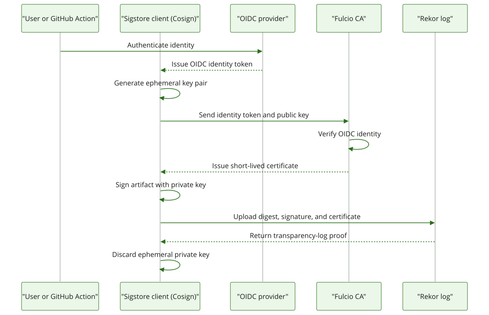

Sigstore 101
... and using it in conda
Agenda
- Sigstore basics; including Fulcio & Rekor
- What the in-toto framework is and why it matters
- PyPI's adoption of attestations
- CEP 27: conda's publish attestation
- CEP ???: serving attestations (in progress)
What is Sigstore?
Sigstore comprises several tools that can be used independently or combined for a comprehensive supply chain security solution. Sign your software without navigating tricky security protocols. Verify signatures against a tamper-proof log.
What problems does it solve?
- Helps prevent the tampering of software artifacts
- Traditional signing keys are difficult to manage securely
- Signatures often lack trustworthy identity and auditability
Before Sigstore
- Maintainer generates a keypair
- Publishes, rotates, and protects the public key forever
- Users must fetch & trust that key out-of-band
Sigstore addresses these problems by helping users move away from a key-based signing approach to an identity-based one.
With Sigstore
- Maintainer proves identity via OIDC ("I am
alice@example.com" or "I am this exact GitHub Actions workflow") - Gets an ephemeral keypair + short-lived cert
- Signs, then discards the private key
- Everything is logged publicly

"... the certificate authority"
- Issues X.509 certs that bind an ephemeral public key to a verified identity — a human via OIDC login, or a machine identity (e.g. GitHub Action)
- Valid OIDC providers: GitHub, GitLab, Google and Microsoft
- Issuance itself is logged to a Certificate Transparency (RFC 6962) log
"... the transparency log"
-
An append-only, publicly auditable, tamper-evident log of signing events
(public good instance at
rekor.sigstore.dev) - Every signature's existence becomes publicly observable, not just verifiable against a key
- An inclusion proof lets anyone confirm an entry is really in the log without blindly trusting the log operator
Why transparency matters
- Without a log, a compromised identity can be used for a targeted attack the public never sees
- With a log, any use of an identity to sign something is discoverable in real time
- Turns "silent targeted compromise" into "publicly detectable event"
Demo Time!
🏃
"... the claim format"
-
A framework/standard (
in-toto.io) for defining machine-readable attestations - An attestation = a signed Statement made of a subject (what's being attested to — e.g. a file + its digest) and a predicate (arbitrary metadata about the subject, identified by a predicate type that defines its schema)
- in-toto itself doesn't sign or provide transparency — it just defines the shape of the claim
in-toto + Sigstore: two different jobs
in-toto provides
- The statement format (subject / predicate / predicate type)
- A way to express arbitrary supply-chain claims (build provenance, publish events, SLSA, etc.)
Sigstore provides
- The signing mechanism (ephemeral keys + Fulcio identity binding)
- The transparency mechanism (Rekor)
- The distributable container — a "Sigstore bundle" (cert + statement signature + inclusion proof)
Demo: signing osmprj's release checksums
osmprj — a
tool for managing OpenStreetMap data. Release 0.3.0's CI
builds installers for 4 platforms and produces a
checksums.sha256 file listing their hashes:
432e607973e8fc557ce4c0a3e4052212f4e7259f65d016dfcf51aa6d7b084f78 osmprj-linux-64-installer.sh
657aa973215f7778ef4f8b50b9ae0f35efd03508fc3359698423abb488530f3d osmprj-linux-aarch64-installer.sh
2bb9de9e33336ff4d279293d0f84fb50ff3206b151207ce115444a7970756ade osmprj-osx-arm64-installer.sh
3be67cd9a21b7a9467139f9008149c559072b14eb9470faf129cb4844e1f3314 install.sh
Signing with cosign
- name: Generate checksums
run: |
(cd installers && sha256sum osmprj-*.sh osmprj-*.ps1) > checksums.sha256
(cd scripts && sha256sum install.sh install.ps1) >> checksums.sha256
- uses: sigstore/cosign-installer@v3
- name: Sign checksums
run: |
cosign sign-blob \
--yes \
--bundle checksums.sha256.bundle \
checksums.sha256
What's inside the bundle
A Sigstore bundle is a single JSON file containing:
- The short-lived signing certificate from Fulcio (identity =
.../release.yml@refs/tags/0.3.0, issuer =token.actions.githubusercontent.com) - The signature over the checksums file
- The Rekor inclusion proof
Ship this one file — no separate public key to distribute.
Verifying with cosign
cosign verify-blob \
--bundle checksums.sha256.bundle \
--certificate-identity "https://github.com/travishathaway/osmprj/.github/workflows/release.yml@refs/tags/0.3.0" \
--certificate-oidc-issuer "https://token.actions.githubusercontent.com" \
checksums.sha256
Verified OK
Python led the way: PEP 740 / PyPI attestations
- docs.pypi.org/attestations — PyPI now accepts digital attestations on uploads, built on PEP 740 and the in-toto Attestation Framework
- Same two ingredients as our conda story: in-toto for the statement shape, Sigstore-style short-lived certs for signing
What PyPI actually supports today
Predicate types
- SLSA Provenance
- PyPI Publish attestation
- Max 2 attestations per file, no duplicate predicate types
Who can attest
- Only Trusted Publisher identities: GitHub Actions, GitLab CI/CD, Google Cloud, ActiveState
- Machine identities, not personal keys
CEP 27: conda's publish attestation
- "Standardizing a publish attestation for the conda ecosystem" — Accepted CEP (conda.org/learn/ceps/cep-0027)
- Authors: Wolf Vollprecht & William Woodruff
- Defines an in-toto Statement + predicate type (
https://schemas.conda.org/attestations-publish-1.schema.json) that answers: who published this package, with what hash, to what channel?
The CEP 27 attestation shape
{
"_type": "https://in-toto.io/Statement/v1",
"subject": [{
"name": "file-name-0.0.1-h123456_5.conda",
"digest": {"sha256": "01ba4719c80b6fe911b091a7c05124b64eeece964e09c058ef8f9805daca546b"}
}],
"predicateType": "https://schemas.conda.org/attestations-publish-1.schema.json",
"predicate": {
"targetChannel": "https://prefix.dev/conda-forge"
}
}
CEP 27: sign & verify flow
Sign
- Generate ephemeral keypair
- Bind to identity via Fulcio cert
- Sign the in-toto statement
- Log to Rekor
- Produce a Sigstore bundle
Verify
- Fetch package + bundle
- Verify bundle against expected identity
- Check predicateType, subject name/digest, and (if present) targetChannel match
CEP 27's open question: how do you get the bundle?
- CEP 27 deliberately does not define a distribution mechanism for the bundles
- Nor how clients establish trust in which identities to trust for a given package
- Both are explicitly listed as future work in the CEP — that's exactly the gap CEP 142 is trying to close
CEP 142 (draft): serving attestations from channels
Open PR, still under review — details below may change.
- Proposes a
<package_url>.sigsendpoint returning a JSON array of Sigstore bundles for that package - A new repodata field lets clients detect when a package's attestations exist/change without an extra round trip per package
CEP 142: fetch & verify sketch
GET https://conda.anaconda.org/conda-forge/linux-64/numpy-1.26.0-py311h.conda.sigs
trusted_identities:
- "https://github.com/conda-forge/*"
require: error # error | warn | ignore
Where this leaves conda
- CEP 27 = the what — the attestation format (accepted)
- CEP 142 = the how it's served (in progress)
- Together they'd let conda clients cryptographically verify "who published this, and where" — the same way PyPI and npm already do — without anyone managing a long-lived key
Resources / Links
- Sigstore — sigstore.dev
- Fulcio — github.com/sigstore/fulcio
- Rekor — rekor.sigstore.dev
- in-toto — in-toto.io
- osmprj — github.com/travishathaway/osmprj
- PyPI attestations — docs.pypi.org/attestations
- CEP 27 — conda.org/learn/ceps/cep-0027
- CEP 142 PR — github.com/conda/ceps/pull/142
Thank you
Questions?